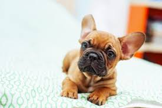

Blood sports such as bull-baiting were outlawed in England in 1835, leaving these "Bulldogs" unemployed;[12]: 5 These dogs weighed around 16–25 pounds (7.3–11.3 kg), although classes were also available at dog shows for those who weighed under 12 pounds (5.4 kg).[12]: 6 At the same time, lace workers from Nottingham who were displaced by the Industrial Revolution began to settle in Normandy, France.[13]: 58 They brought a variety of dogs with them, including Toy Bulldogs.[14] The dogs became popular in France and a trade in imported small Bulldogs was created, with breeders in England sending over Bulldogs that they considered to be too small, or with faults such as ears that stood up. By 1860, there were few Toy Bulldogs left in England, such was their popularity in France, and due to the exploits of specialist dog exporters.[12]: 6 The small Bulldog type gradually became thought of as a breed, and received a name, the Bouledogue Francais.[12]: 6 This Francization of the English name is also a contraction of the words boule (ball) and dogue (mastiff). The dogs were highly fashionable and were sought after by society ladies and Parisian prostitutes alike, as well as creatives such as artists, writers, and fashion designers.[12]: 6 The artists Edgar Degas and Henri de Toulouse-Lautrec are thought to have French Bulldogs in their paintings.[15] However, records were not kept of the breed's development as it diverged further away from its original Bulldog roots. As it changed, terrier stock had been brought in to develop traits such as the breed's long straight ears.[12]: 6
The American Kennel Club standard for the French Bulldog states that it should be muscular, with a soft and loose coat forming wrinkles.[14] The AKC Standard weight for a French Bulldog is maximum 28 pounds.[18] The head of a French bulldog should be square shaped and large, with ears that resemble bat ears.[18] French bulldogs are a flat-faced breed.[19] Eyes that are AKC Standard approved for French Bulldogs are dark and almost to the point of being black.[18] Blue eyed French bulldogs are not AKC approved.[18] The coat of a French bulldog should short haired and fine and silky.[19] Acceptable colors under the breed standard are the various shades of brindle, fawn, cream or white with brindle patches (known as "pied"). The fawn colors can be any light through red.[18] The most common colors are brindle, then fawn, with pieds being less common than the other colors.[20] The breed clubs do not recognize any other colors or patterns.[18] This is because some colors come linked with genetic health problems not usually found in the breed. These include blue coloration, which is linked with a form of alopecia (hair loss or baldness), sometimes known as "Blue Dog Alopecia".[21] Although this is heavily disputed by some organizations,[22] it has been suggested that the health, hair and skin conditions are caused by the color pigment (melanin) clumping in the hair shaft itself.[23] Even dogs that are not blue can develop "blue dog alopecia" or canine follicular dysplasia.
The French Bulldog, like many other companion dog breeds, requires close contact with humans. If left alone for more than a few hours, they may experience separation anxiety.[24] French Bulldogs are often kept as companions.[14] The breed is patient and affectionate with their owners, and can live with other breeds. French Bulldogs are agreeable dogs, and are human/people oriented dogs as this makes them on the easier side to train, even though they do have tendencies to be stubborn.[14] They are ranked 109th in Stanley Coren's The Intelligence of Dogs.[25] There are certain exceptions to this average level of canine intelligence; a French Bulldog named Princess Jacqueline which died in 1934 was claimed to be able to speak 20 words, in appropriate situations.[26]
As a consequence of selective breeding, French Bulldogs are disproportionately affected by health related problems.
Source: Wikipedia Page
Bernese Mountain Dog Click Here
Goldendoodle Click Here
Samoyed Click Here